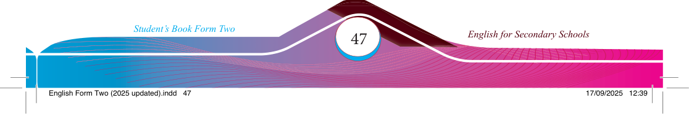
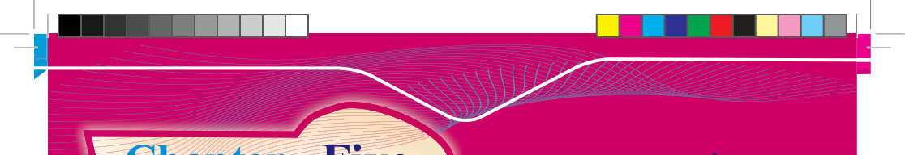

Chapter Five
Activity 1
Think about:

Reading for comprehension
Introduction
Reading for comprehension enhances your usage of various words in different contexts, improves fl uency and deepens understanding. In this chapter, you will engage in activities that involve expressing the main ideas from written texts, inferring meanings, and relating messages from the texts to the real-life experiences. The competencies gained will enhance your ability to comprehend main ideas, meanings, and messages from various written sources, ultimately contributing to academic achievement.
1. how reading a text benefi ts English language learners.
2. the importance of extracting main ideas and messages from written sources.
3. the signifi cance of relating messages from a text to the real-life experience.
Expressing the main ideas from texts
(a)
Read the following telephone conversation and identify the main ideas.
Receptionist: (Phone rings) Hello! This is Imperial Hotel; how can I help you?
Jane:
My name is Jane Ndunguru. I wish to make a reservation.